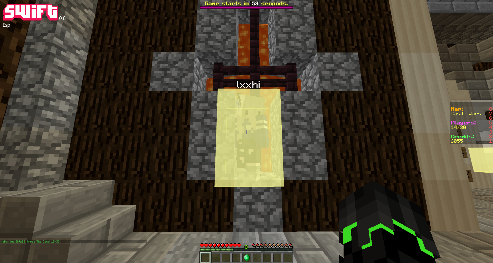
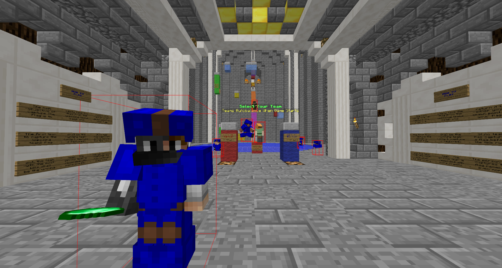

Swift vs Other Clients' Esp


Swift's esp is brightly colored and designed in an old school 1.8 style which makes it easier to spot an enemy player in the distance, unlike the other client's esp which is a lot harder to see and not as brightly colored.
Swift has a style option that can help you choose the correct style that best suits you. By selecting from the 1.8 esp or the 1.10 esp checkboxes.
Swift's Esp Pros and Cons
-
Better Designed.
-
Easier to see from further distances.
-
Brighly colored.
-
More rendering to be done.
-
Harder to see other players skins.
-
Makes your screen look crowded.
Pros
Cons
Other Clients' Esp Pros and Cons
-
Easier to see other players skins.
-
Quicker rendering.
-
Makes your screen look less crowded.
-
Boring to look at.
-
Harder to see.